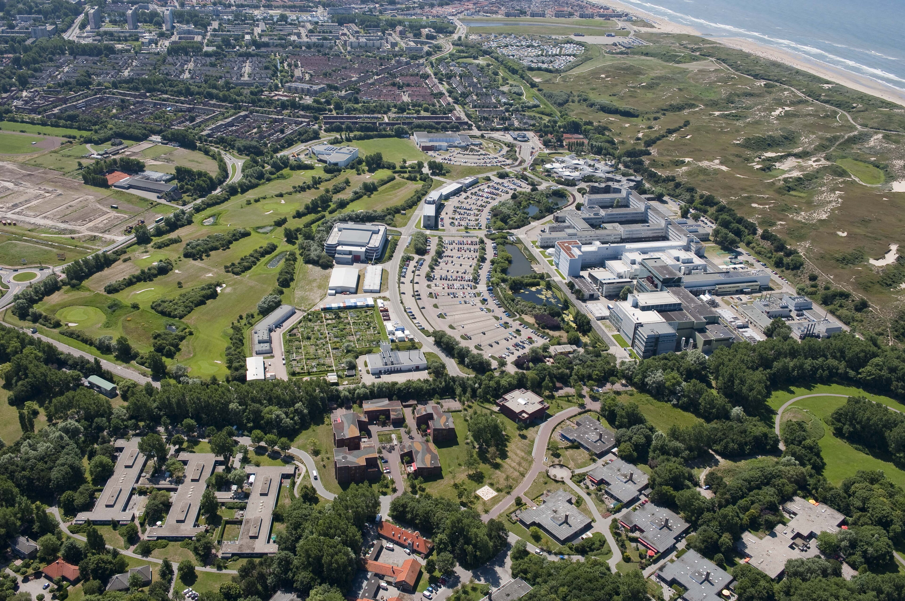
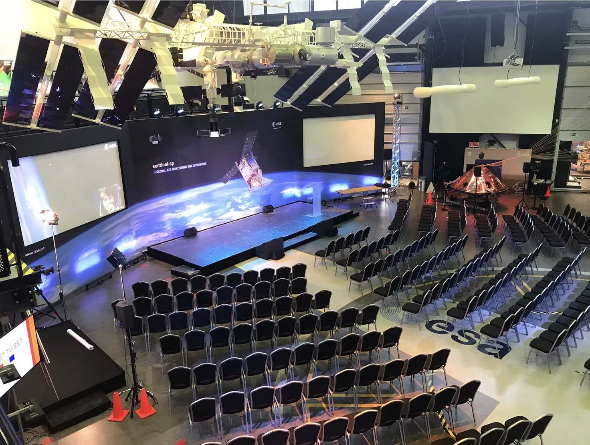

Organisers
Welcome and practical information
This five-day meeting at ESA/ESTEC, organised by the NewAthena Science Working Group 2 (SWG2), brings together researchers working on galaxies and supermassive black holes in X-rays. The meeting is science-driven: centred on the presentation and discussion of results spanning the full scope of SWG2 science.
The timing is deliberate. Scheduled after the SWG2 Special Issue deadline in the Journal of High Energy Astrophysics, the meeting provides a natural forum for authors to present their recently submitted work. The meeting is open to all SWG2 science, not only to researchers contributing to the Special Issue — anyone working in the field is warmly encouraged to present their work.
NewAthena (planned launch: late 2030s) is ESA's next flagship X-ray observatory. SWG2 — Galaxies and Supermassive Black Holes — gathers researchers working on AGN physics, galaxy evolution, and the cosmic X-ray background.
NewAthena SWG2 encompasses studies of galaxies and their AGN, and their coevolution at all scales: the geometry and origin of X-ray emitting regions, AGN outflows and their energetics, AGN and stellar feedback on host galaxies, and AGN population studies up to high redshift to constrain the seeds and growth of supermassive black holes.
The NewAthena mission will provide an unprecedented view of cosmic accretion, from stellar-mass X-ray binaries in galaxies to supermassive black holes (SMBHs) at the epoch of reionization. We present a unified forward-modeling framework to assess the ability of Wide Field Imager (WFI) surveys to recover the populations and physical properties of accreting sources and their host galaxies.
Using realistic mock catalogs of AGN and galaxies combined with WFI survey specifications, we simulate X-ray populations and measured properties. The framework incorporates positional and photometric uncertainties, counterpart identification, and SED fitting. This enables a quantitative evaluation of the recovery and biases of stellar mass, star-formation rate, X-ray luminosity, and specific accretion rate. We assess the robustness of these measurements and identify complementary observations that can improve them.
We further evaluate NewAthena’s capability to constrain the cosmic evolution of X-ray binaries and SMBH growth through specific accretion-rate distributions and forward modeling. This will provide a comprehensive assessment of the WFI surveys’ potential to trace accretion power across the compact-object mass spectrum, with important implications for galaxy-black hole co-evolution, feedback processes, and gravitational-wave sources from stellar-remnant and SMBH mergers.
Stray light from bright X-ray sources outside the nominal field of view introduce background features in NewAthena Wide Field Imager (WFI) observations, affecting source detection and scientific performance. This work investigates the impact of different optical configurations on stray-light performance, with the aim of identifying optical designs that minimise the stray light effect on WFI observations. Stray light contributions are characterised using SIXTE-simulated observations for multiple optical configurations. Source detection is then performed, and the detected sources are cross-correlated with the input source catalogues. This enables systematic assessment of source detectability and distribution under different stray-light configurations, supporting optimisation of the optical design to minimise the impact of stray light on WFI observations.
Dwarf galaxies offer a unique window into the origins and early growth of massive black holes (MBHs), potentially hosting relics of the seeds of today's supermassive black holes. However, establishing a census of MBHs in these low-mass systems remains challenging, as many may be weakly accreting or dormant. In this talk, I will discuss how X-ray observations can help address this challenge. First, I will discuss AT 2018cqh, a tidal disruption event in a dwarf galaxy whose unusual, long-lasting X-ray evolution is consistent with an intermediate-mass black hole interpretation. Second, I will present our Chandra study of X-ray binaries (XRBs) in dwarf galaxies from the Legacy ExtraGalactic UV Survey (LEGUS). By combining Chandra observations with Hubble Space Telescope imaging of resolved stellar populations, we construct X-ray luminosity functions for different XRB donor populations and investigate their contributions to the X-ray emission of dwarf galaxies. Together, these studies highlight different aspects of X-ray searches for massive black holes, from revealing potential black hole activity through transient events to characterizing stellar X-ray sources that may complicate the identification of faint AGNs. They also provide valuable insights for future NewAthena observations and constraining black hole populations in dwarf galaxies.
Characterizing the nuclear properties of quasars (QSOs) powered by SMBHs with masses >10^9 M_sun during the Epoch of Reionization (EoR, z>6) is fundamental to understanding the efficient feeding and feedback mechanism driving early SMBH growth. Coronal X-ray emission crucially provides the most direct window into the innermost accretion process.
Based on two deep XMM-Newton programmes (~3 Ms) targeting 28 luminous QSOs at z=6-7.6, we revealed a distinct nuclear regime in the EoR: (i) X-ray spectra are significantly softer than at lower redshift (Gamma ~2.4) or feature low-energy (~30 keV) cut-offs, and (ii) spectral slopes correlate with broad-line wind velocities, linking coronal physics directly to accretion-driven disc outflows. These features point toward cold, thick coronae driven by super-Eddington accretion. Unambiguously disentangling these physical coronal parameters and linking them to the feedback-driving semi-relativistic winds requires coverage from next-generation X-ray observatories.
Here, we present NewAthena simulations showing how deep WFI and X-IFU observations on the brightest QSOs will constrain the key regime of early SMBH growth. WFI pointings will break continuum degeneracies, enabling accurate measurements of coronal temperature, optical depth, and cold reflection in the EoR. In synergy with WFI, deep X-IFU exposures will enable ultra-fast outflows detection at the earliest epochs, probing the coronal-wind connection in the semi-relativistic regime.
Understanding how super massive black holes formed and grew in the early Universe requires uncovering both the first accreting black holes and the heavily obscured populations missed by current surveys. NewAthena’s WFI will transform this landscape, probing AGN demographics from beyond Cosmic Noon to the Epoch of Reionization. We assess this potential through end-to-end SIXTE simulations based on the ASTRID cosmological hydrodynamical simulation, incorporating realistic backgrounds, source detection and Bayesian spectral analysis.
In the deepest survey tier, we predict 18 AGN detections at z > 6, including 2 at z > 7, extending the X-ray luminosity frontier by more than an order of magnitude compared with current surveys. The input X-ray luminosity function is recovered within 1σ across substantial luminosity ranges at 6 < z < 7.5, demonstrating WFI’s potential to constrain the abundance of early accreting black holes. Complementing this view of the first growing black holes, NewAthena will also unveil the heavily obscured population that remains elusive to current surveys. At 3 < z < 4, we predict 38 detected Compton-thick AGN, with up to 18 well characterized when multiwavelenght information is included. Together, these results highlight NewAthena’s ability to deliver unprecedented demographic constraints on both the earliest and the most heavily obscured growing supermassive black holes, shedding new light on their formation and evolution across cosmic time.
The geometry of the corona in active galactic nuclei (AGN) and X-ray binaries remains an open question, and determining the nature of this primary X-ray source is one of NewAthena’s driving science goals. Recent X-ray polarimetry points towards a corona extended parallel to the disc, but its exact shape remains unknown. Relativistic reflection offers a complementary probe, as the coronal geometry sets the disc emissivity profile imprinted on the reflection spectrum. We will present several models of coronal geometry fitted to NuSTAR observations of the X-ray binary MAXI J1348-630, whose almost unobscured view of the inner accretion flow makes it an ideal test case. These models use emissivity profiles, line profiles and reflection spectra generated by the relativistic ray-tracing code Gradus.jl. Since these calculations are mass-independent in units of gravitational radii, X-ray binaries provide high-S/N laboratories of the same accretion physics NewAthena will study across the AGN population. We use these fits to explore the degeneracies between corona models at NuSTAR resolution. High-resolution spectroscopy offers a way to break them: XRISM now separates the broad Fe K line from narrow emission and absorption features. Using simulated X-IFU spectra, with ~4 eV resolution and several times the Fe K effective area of XRISM/Resolve, we assess which of these geometries NewAthena can distinguish in bright AGN.
Accreting black holes can be bright X-ray sources, with most of the emission originating from a Comptonizing region close to the black hole that is often called the corona. Part of the hard X-ray emission from the corona is reflected by the accretion disk, creating prominent features in the energy spectrum. The exact shape of this reflection spectrum encodes information about disk properties and is broadened by relativistic effects and interpretation requires detailed modelling. So far, most reflection modelling has been done with a lamppost approximation or a phenomenological emissivity prescription, limiting our ability to interpret results with confidence. Recently, important steps have been taken to model more realistic coronal geometries. I will present updates for the reflection model relxill, which allow a broad range of coronal geometries to be tested and fit to data and highlight how NewAthena's large effective area and spectral resolution will improve our ability to extract information from the reflection spectrum.
NewAthena will transform X-ray studies of active galactic nuclei by combining a large collecting area with the high spectral resolution of the X-IFU, opening a regime in which the interpretation of AGN spectra will be limited as much by model fidelity as by photon statistics. In this talk, I will review recent developments in relativistic reflection models built on xillver that are aimed at meeting this challenge. These include high-density plasma effects, emission from the plunging region, returning radiation, an improved treatment of Compton scattering at microcalorimeter resolution, vertically extended disks, and transmission through partially ionized media. Using representative X-IFU simulations, I will illustrate how several of these effects can imprint measurable signatures in NewAthena spectra and assess their impact on inferred quantities such as black hole spin, disk structure, and coronal geometry. These advances highlight the need for physically complete and computationally robust reflection models to fully exploit NewAthena’s unprecedented spectral capabilities.
Constraining the growth history of supermassive black holes (SMBHs) is key to understanding structure formation across cosmic time. Different growth mechanisms are predicted to leave distinct imprints on SMBH spin distributions, making population-level spin measurements a potential probe of how SMBHs grow. Relativistic reprocessing of coronal X-rays by the accretion flow in active galactic nuclei (AGN) can provide spin measurements, making this a compelling goal for future NewAthena extragalactic surveys. However, X-ray spectra for much of the AGN population may not constrain spin accurately, particularly when affected by ionised absorption, a soft excess, circum-nuclear obscuration, or a complete lack of relativistic reflection signatures altogether. In this talk, I will statistically explore the conditions under which SMBH spin can be measured in the NewAthena energy band using relativistic X-ray reflection spectral modelling. Using representative simulations for the NewAthena Wide Field Imager (WFI) and X-ray Integral Field Unit (X-IFU), I will forecast the mission’s ability to constrain the local SMBH spin distribution while accounting for spectral complexity that can obscure the relativistic reflection signal. Finally, using the HORIZON-AGN cosmological simulation as input, I will present an illustrative example for which NewAthena spin measurements could distinguish between growth through accretion alone and growth through both accretion and SMBH mergers.
The Imaging X-ray Polarimetry Explorer (IXPE) have opened a new window on the morphology of hot coronae in radio-quiet, unobscured AGN. However, interpreting the polarization signal depends critically on a reliable spectral decomposition and on accurate constraints on physical parameters such as the coronal temperature and black hole spin. In fact, IXPE observations and Monte Carlo simulations have shown that uncertainties in these parameters and in the relative contributions of direct, reflected and scattered emission can lead to different, sometimes conflicting, interpretations of the same polarization measurement. IXPE's observations of the Seyfert galaxy NGC 4151 provides a compelling example.
NewAthena's high-resolution spectroscopy will help disentangle these components and constrain the physical properties of the innermost regions of AGN. Using simulated NewAthena spectra and Monte Carlo Radiative Transfer models, I will explore how improved component separation and tighter spectral constraints translate into more robust estimates of the intrinsic coronal polarization and a narrower range of viable coronal geometries.
By reducing spectral ambiguities, NewAthena can make X-ray polarization a more reliable diagnostic of coronal physics and geometry, strengthening the interpretation of IXPE results and the scientific return of future polarimetric missions.
Feeding beyond the limit set by their own radiation, super-Eddington AGN are nature’s most extreme accretors: radiation pressure inflates the disc, traps photons and launches powerful winds. They may have built the first SMBHs, yet their disc-corona geometry and winds remain poorly constrained. Our broad-band XMM-Newton/NuSTAR study of the SEAMBH sample (reverberation-mapped, 1 < λEdd < 426) reveals steep continua, low coronal temperatures, enhanced reflection and powerful ionised outflows. These local sources are analogues of high-z accretors, echoing the X-ray slope-UV wind link in luminous z > 6 quasars and the X-ray weakness of JWST selected AGN and Little Red Dots. Building on this, we present NewAthena/X-IFU simulations of five SEAMBHs from our contribution to the NewAthena Special Issue, submitted for internal revision. X-IFU will recover Γ to a few percent, detect coronal cutoffs of ~45-60 keV from continuum curvature alone, and measure the ionisation and column density of multiphase winds, from warm absorbers to UFOs, to <0.1 dex and their velocities to a few percent. It will also distinguish relativistic-disc from BLR origins of the broad Fe Kα line at >5σ in most sources, while the soft excess remains degenerate between warm Comptonisation and blurred reflection. We discuss how these measurements will constrain the high-λEdd branch of the V-shaped Γ-λEdd relation, linking super-Eddington disc-corona coupling and feedback to SMBH growth across cosmic time.
We present a multi-satellite study of the black hole candidate GS 1354–64 during its 2025–2026 outburst, the first complete hard-to-soft-to-hard transition observed from this source. Using NuSTAR spectroscopy and timing together with IXPE polarimetry, we track the evolving accretion geometry. In the hard state, strong Type-C QPOs rise from 0.08 Hz to 1.73 Hz and anti-correlate with the inner disk radius, while a highly ionized Fe XXVI disk wind is detected. In the soft state, joint reflection modeling yields a near-maximal spin (a* ≈ 0.998), an inclination of i ≈ 51.5°, and an ISCO-pinned disk. Soft-state QPOs shift to 4.7–6.2 Hz and weaken. Simultaneous spectro-polarimetry shows an energy-increasing polarization degree, reaching about 7.5–9.1%, with a constant polarization angle, favoring a radially extended slab corona over spherical or lamppost geometries. These results provide a unified spectro-temporal-polarimetric picture of the outburst.
In recent years, optical photometric and spectroscopic wide-area surveys have revealed a population of extremely variable AGN, called changing-look AGN (CLAGN), in which the rest-frame UV-optical spectra show the (dis)appearance of the blue continuum and/or the broad emission lines. These changes can also be accompanied by changes in the X-ray flux and spectral shape. Over the past decade, hundreds of CLAGN have been discovered, but post-transition. Identifying these sources during transition and following them in the multi-wavelength is crucial to understand their underlying physical processes.
Using a combination of optical light curves from ZTF and repeated optical spectroscopy from SDSS-V, we identified two CLAGN in transition. Both sources were caught during transition thanks to a sudden increase in their optical fluxes within a few weeks. This was accompanied by a change in the width and strength of the Balmer lines and the slope of the blue continuum. However, based on the X-ray follow-up observations (XMM, Swift, Chandra) of these sources, we inferred that their X-ray properties are completely different. In this talk, I will present results from the X-ray spectral analysis and broadband SED fitting of these rare CLAGN found during transition. I will discuss the differences in their X-ray evolution as they undergo transition and how they can be used to shed light on the inner regions of AGN.
Changing-look active galactic nuclei (CLAGN) provide a unique opportunity to investigate how supermassive black hole accretion flows evolve. Our long-term, multi-wavelength study of NGC 3822 revealed more than an order-of-magnitude variation in bolometric luminosity over 17 years, accompanied by the appearance and disappearance of broad optical emission lines. The association between the broad-line state and higher Eddington ratio supports an accretion-driven origin for this transition, although variable absorption may also contribute. Complementary broadband analysis of a sample of narrow-line Seyfert galaxies (NLS1s) reveals a weak positive correlation between X-ray photon-index and Eddington ratio, alongside coronal properties consistent with efficient Compton cooling. Together, these results motivate investigating how the X-ray corona responds to changes in accretion state.
NewAthena's high throughput and high-resolution X-ray spectroscopy will enable tighter constraints on coronal temperature, high-energy cutoff,absorption and disk reflection. Time-resolved observations could distinguish intrinsic changes in the accretion flow from variable obscuration and test whether coronal evolution accompanies the changing-look transition. This will help establish how the inner disk-corona system responds to changing accretion conditions and shapes the observable evolution of AGNs.
Accreting supermassive black holes are intrinsically variable, changing in brightness across the electromagnetic spectrum and over a wide range of timescales. In recent years, a remarkable subset of active galactic nuclei has been found to exhibit extreme spectral variability. These changing-state events are thought to be driven by rapid and dramatic changes in the black hole accretion rate, challenging the standard expectations for accretion timescales in systems hosting black holes with masses of millions to billions of solar masses. Such transitions provide a unique opportunity to probe the structure and evolution of accretion flows around massive black holes.
In my talk, I will present recent observational results on nearby changing-state AGN, highlighting how their X-ray emission evolves during the transitions, and what these changes reveal about the structure of the accretion flow. I will also discuss how the capabilities of Athena will open new avenues for studying rapid accretion-state transitions in AGN.
The non-linear relation between X-ray and UV luminosity offers a powerful tool both to probe the disk–corona connection in quasars and to derive their distances, thereby turning quasars into high-redshift standard candles. Over the past decade, studies with XMM-Newton and Chandra have demonstrated that the main bottleneck lies on the X-ray side: the absence of a wide-field X-ray survey with depth comparable to the SDSS (for a typical quasar SED) has limited our ability to validate this method and to construct a quasar Hubble diagram comparable to that of supernovae. These limitations will be overcome with NewAthena. In its first three years of regular operations, NewAthena will deliver tens of thousands of serendipitous, high-quality X-ray spectra of optically selected quasars. This unprecedented dataset will enable precise measurements of cosmic expansion in the crucial redshift range z = 3–6, which remains poorly constrained by other major cosmological probes.
The Hubble constant (H0) quantifies the present rate of cosmic expansion, a fundamental parameter in modern cosmology. However, a significant discrepancy (approximately 5σ) exists between direct measurements using the traditional distance ladder method and indirect inferences based on cosmic microwave background observations. X-ray reverberation mapping of active galactic nuclei provides an independent route to constrain H0: by simultaneously modeling the time-averaged spectrum and the Fourier-resolved spectral–timing response, it is possible to constrain the intrinsic geometry and scaling of the accretion flow, effectively turning reverberating AGNs into standard candles. I will show that NewAthena, with its unprecedented combination of throughput and spectral resolution, will critically reduce degeneracies between reverberation model parameters and measure H0 with the precision required to arbitrate the current tension.
Supermassive black holes (SMBHs) show very complicated changes over time due to variations in accretion, effects of relativity, and the behavior of plasma in magnetic fields. Multi-messenger astrophysics has now allowed us to explore such transient changes, which have been connected with features like quasi-periodic oscillations (QPOs), tidal disruption events (TDEs), and bursts of jet activity, thanks to instruments like the Event Horizon Telescope, JWST, TESS, and future projects such as ATHENA. We describe in this chapter the EBBY/FLOW framework, which is essentially a physically inspired cyclic model that represents SMBH evolution through phases of energy storage (EBBY) alternating with energy release (FLOW). EBBY/FLOW synthesizes both the observational facts and the theoretical models of accretion disks, non-linear resonance, and magnetohydrodynamic (MHD) transport phenomena. These differential equations, which represent disk mass changes, resonant vibrations, and feedback through jets plus transient energy input, are used to unfold the model. Besides determining the scaling laws that relate the variability periods with black hole mass, we also put forward some observational signals that can be checked by the present time-domain surveys and upcoming ones. The EBBY/FLOW model not only offers a comprehensive understanding of the SMBH variability but also lays down a foundation for the integration of accretion physics with the major feedback mechanisms at large scales.
Spectral-timing techniques offer a way to constrain the density of AGN outflows, and hence their location and energetics: as the ionizing continuum varies, the absorbing gas responds with density-dependent delays, which leave a characteristic imprint on the coherence-energy spectrum (Juráňová et al., 2022; Pandolfi et al., in prep.). Applying this method to warm absorbers requires resolving individual absorption features on variability timescales. NewAthena’s X-IFU will make this possible by combining high spectral resolution with a large effective area. We present simulations of X-IFU observations of variable AGN based on our time-dependent photoionization model of the absorbers, accelerated by neural network emulators. This machine learning-driven optimization reduces simulation runtimes by more than three orders of magnitude, enabling a systematic exploration of the parameter space, in turn, a robust assessment of how well coherence-spectral analysis can constrain the density of AGN outflows. Our results bring us closer to applying spectral-timing methods to observational data and highlight NewAthena's potential to advance our understanding of AGN feedback.
High-resolution X-ray spectroscopy probes the physical conditions and geometry of ionized gas around active galactic nuclei (AGN). I will present an application of TEPID2, a major upgrade of the Time-Evolving PhotoIonisation Device (TEPID; Luminari et al. 2023), now including an integrated level-population solver. Using multi-epoch XMM-Newton observations, we investigate the OVII soft X-ray emission lines in NGC 4051, a highly variable Seyfert galaxy hosting a multi-phase warm absorber, whose ionization responds to changes in the primary continuum. We explore the possibility that the higher-opacity absorber is also responsible for such emission. Due to the limited sensitivity of XMM/RGS, we obtain a consistent result but with limited significance, since an origin in more distant gas (such as the Narrow Line Region), where light-travel delays may smooth the response to continuum variations, cannot be fully ruled out. With its high spectral resolution and soft X-ray throughput, NewAthena/X-IFU will enable the He-like triplets to be resolved and its components monitored across multiple epochs, thus providing tight constraints on the density, location, and structure of ionized absorbers/emitters surrounding supermassive black holes.
Variability is a hallmark of AGNs. Both the variability itself and the response of the surrounding matter to it are among the most powerful tools to probe AGN physics and composition. Photoionized gas is no exception to this: its variability can fully reveal its fundamental properties. Albeit long needed, time-evolving ionisation models are becoming available only recently. I will present a substantial update of the Time-Evolving PhotoIonisation Device, i.e. TEPID-2, which finally computes self-consistently the electron level populations and, thus, the gas emission spectrum. The code has been successfully benchmarked to other publicly available codes and allows a detailed control of all the physical processes, including the photon escape channels, partial or complete redistribution of the line photons, the atomic databases to be employed, the gas geometry and covering factor and so on. I will provide a quantitative overview of the capabilities of TEPID-2 in light of the expected performances of Athena/XIFU and of the XRISM/Resolve microcalorimeter, highlighting the unique diagnostics enabled by time-resolved absorption and emission spectroscopy.
AGN winds are considered one of the main channels of AGN feedback, as they can carry enough momentum and energy to regulate or quench star formation in their host galaxies. However, the energy carried by these winds is still poorly known, because it depends on the distance of the gas from the black hole, which cannot be derived from a single spectrum. When the ionising source varies, the gas responds with a delay that depends on its density. By modelling this delay with time-dependent photoionisation models, we can measure the location of the gas and therefore the momentum and energy of the wind. I will present an application of this method to Mrk 766, based on a coordinated XMM-Newton, NuSTAR, XRISM, Swift and NICER campaign, where the Swift and NICER monitoring was designed specifically for time-dependent modelling. Using our code TPHO, we model the response of the warm absorber and constrain the location and energetics of the outflow. I will then show how this approach will become key in the NewAthena era, when the X-IFU will allow us to measure the energetics of winds beyond the local Universe. Finally, I will show how time-dependent photoionisation can be applied to winds in nuclear transients, such as tidal disruption events and quasi-periodic eruptions. In these sources, the luminosity changes by large factors, which makes them good candidates to study the energetics of the wind.
The geometry of active galactic nucleus (AGN) winds remains a major uncertainty in determining their kinetic power and role in feedback. Combining absorption, which probes gas along our line of sight, with emission provides a route to reconstructing their global structure.
We present new results from XRISM observations of PDS 456 obtained with RED-WINE, an updated implementation of the Wind in the Ionized Nuclear Environment framework. The model combines photoionization calculations with fast analytical treatments of relativistic absorption and emission. Preliminary results suggest an angularly confined wind, covering approximately 40% of the sky as seen from the central source. However, the limited signal-to-noise of the emission features and degeneracies between gas properties and geometry leave important uncertainties.
NewAthena/X-IFU will transform this approach through its larger effective area and high spectral resolution extending into the soft X-ray band. Simulations demonstrate the potential to substantially improve constraints on wind geometry and ionization structure in roughly one third of the exposure time, accessing emission diagnostics beyond the Fe K complex. These capabilities will enable more informative studies of wind variability and energetics, strengthening the connection between nuclear wind measurements and tests of AGN feedback.
Quasi-relativistic AGN nuclear winds, observed as highly ionized X-ray Ultra-Fast Outflows (UFOs), are among the most promising mechanisms powering AGN feedback and shaping SMBH/host-galaxy co-evolution. Assessing the relation between AGN power and the maximum UFO velocity is crucial to determine their still-debated launching mechanism. We present the first systematic XMM-Newton study of 33 bright sources searching for UFOs in the 7-12 keV band, leading to the detection of four previously unknown UFOs with v>0.3c, confirming that local Seyferts host such high-velocity winds and challenging our current knowledge about the linear v_out-L_Bol correlation. However, CCDs cannot resolve the velocity and ionization structure of these winds; we show how high-resolution spectroscopy fills this gap in one of them, NGC 7469, combining XMM-Newton/RGS and XRISM/Resolve data from our recent campaign to cover both the soft-band and the Fe-K region, revealing distinct atomic features due to a v>0.31c wind. This synergy anticipates NewAthena: we show simulations of X-IFU resolving the multi-zone wind across 0.2-12 keV in local Seyferts like NGC 7469 in only a few tens of ks, unveiling the clumpy UFO forest, testing acceleration mechanisms, and accurately determining the wind kinetic power in this almost unexplored velocity regime in the local Universe. Moreover, WFI+X-IFU will push such studies to higher redshift, crucial to determine the impact of AGN at different cosmic times.
We present the first XRISM observation of the Seyfert 1.9 active galactic nucleus (AGN) MCG-5-23-16, jointly analyzed with simultaneous NuSTAR data. The high-resolution Fe Ka spectrum resolves emission from the torus, broad-line region (BLR), and accretion disk. Broadband modeling constrains the disk inner radius to rin ~ 8-17 rg, smaller than the ~40 rg inferred previously, with an inclination of i ~ 30-40 degrees and logXi_disk ~ 3. Multiple Si, S, and Fe absorption lines reveal an ultrafast outflow (UFO) at ~0.41c, with logXi_UFO ~ 3 and NH ~ 10^22 cm^-2. Its inferred escape radius of ~12 rg is comparable to the disk inner radius. The highly ionized reflecting disk surface disfavors UV line driving from that layer. By combining the disk-reflection and UFO constraints, we find new support for magnetohydrodynamic acceleration in this sub-Eddington AGN (Eddington ratio <= 0.1). We will compare these results with those for other AGNs, including 3C 120 and NGC 3783, to explore the diversity of accretion disk and UFO properties on scales smaller than 100 rg, and discuss how NewAthena's high-resolution, broadband X-ray spectroscopy could advance our understanding of the structure and driving mechanisms of ultrafast outflows.
Active galactic nuclei exhibit variability across a wide range of spatial and temporal scales, reflecting the interplay between accretion and outflows. The XRISM campaign of NGC 3783 has revealed variability across multiple components, from the innermost accretion flow to the more extended circumnuclear environment. In NGC 3783 XRISM/Resolve detected a transient ultra-fast outflow with (~0.19c), potentially accelerating from (0.05c) to (0.3c) within days. Meanwhile, variability in the broad-line-region Fe Kα emission constrains the location and dynamics of the reprocessing gas, while the warm absorber exhibits both short-term variability and long-term evolution in its column density and velocity structure.
These discoveries demonstrate the potential of time-resolved X-ray spectroscopy to probe the dynamics of AGN components. However, the acceleration mechanism of the transient UFO remains uncertain. NewAthena's X-IFU, with its large effective area and high spectral resolution, will enable more precise measurements of velocity evolution within individual events, helping distinguish between radiation-driven and magnetically driven ultra-fast outflow. Its enhanced sensitivity will also improve studies of WA and BLR variability, providing a more comprehensive understanding of the physical processes governing AGN outflows and their connection to accretion.
Quasar-driven nuclear outflows, observed as highly ionized X-ray Ultra-Fast Outflows (UFOs) and UV Broad Absorption Lines (BALs), are crucial drivers of AGN feedback and galaxy co-evolution. While XRISM unveils the complex, multi-phase velocity structure of local winds, our knowledge at Cosmic Noon (z = 2-4) remains limited by small, biased samples of lensed quasars and CCD spectrometer sensitivities.
We present an observational strategy with NewAthena to characterize UFOs at Cosmic Noon. First, a multi-tiered NewAthena/WFI survey will deliver an unbiased census of Fe K outflows across the bulk of the z = 2-4 quasar population (L_2-10 keV > 3 x 10^44 erg s^-1), constraining their true incidence and dependence on luminosity and accretion rate. Second, deep NewAthena/X-IFU pointings on the brightest non-lensed QSOs will achieve high-resolution (Delta E ≈ 4 eV) spectroscopy to resolve the clumpy "UFO forest", test acceleration mechanisms (v_out ∝ xi^alpha), and measure wind kinetic power without CCD-inherent underestimations. Finally, X-IFU observations of UV-selected BAL quasars will link X-ray and UV outflows, discriminating between clumpy multi-phase and radially stratified geometries.
By exploiting cosmological redshift to shift rest-frame Fe K into the peak of the X-IFU effective area, NewAthena will establish whether disk winds and feedback are universal across cosmic epochs.
Highly accreting active galactic nuclei provide laboratories for investigating the connection between black hole growth and powerful winds. I will present results from a coordinated XRISM, XMM–Newton, and NuSTAR observation campaign on a highly accreting narrow-line Seyfert 1 galaxy I Zw 1, focusing on high-resolution X-ray spectroscopy. The hard X-ray spectrum reveals a complex combination of emission and absorption features, including a forest of ultra-fast outflows, three ultra-fast inflow candidates, and distinct Fe-K emission components consistent with X-ray reprocessing in the broad line region and the inner accretion disk. We use photoionization modeling to characterize the absorbing gas and investigate their velocity structure and geometry. I will discuss their implications for the AGN feeding and feedback around the central black hole. This campaign could serve as a pathfinder for NewATHENA/X-IFU, whose time-resolved high-resolution spectroscopy will enable us to trace changes in the physical state and kinematics of the gas and test the mechanisms governing AGN accretion flows and winds.
NewAthena is designed to solve the long-standing mystery of how accreting black holes co-evolve with their host galaxies. Outflows launched by AGN, in the form of winds and jets, are promising mechanisms connecting super-massive black hole growth with galaxy evolution; however, their launching mechanisms, physical structure, and interplay remain poorly understood. NewAthena’s X-IFU, with unprecedented effective area and spectral resolution, will enable detailed characterization of AGN outflows.
The shape of wind absorption lines, uniquely distinguishable by X-IFU, serves as a smoking gun for outflow launching mechanisms (radiation pressure, magneto-hydrodynamic driving, and thermal winds). By tracking changes in outflow parameters, X-IFU will further distinguish among different driving mechanisms and quantify the kinetic power and momentum carried into the host galaxy. We also develop a spectroscopic approach for NewAthena/X-IFU exploiting screening effects in multi-phase outflows to reconstruct their architecture, linking their structure to the underlying launching mechanism. Moreover, in jetted AGN, high-resolution X-IFU spectroscopy will allow us to track the broad disk winds thought to provide the external pressure necessary to collimate these jets. Accordingly, we exploit NewAthena’s unique spatial and spectroscopic resolution to search for intrinsic absorption and investigate jet–wind interactions, providing a unified view of AGN outflow launching mechanisms.
How active galactic nuclei (AGN) transfer energy to their surroundings and regulate gas cooling remains a central question in galaxy evolution. Owing to its proximity and prominent jet, M87 provides a unique laboratory to investigate these processes through the connection between its hot X-ray-emitting atmosphere and the warm ionized and cold molecular gas. We combine new optical integral-field spectroscopy from SITELLE/CFHT and MEGARA/GTC with archival MUSE, ALMA, and Chandra observations to probe this multiphase environment. The warm ionized filaments exhibit complex velocity structures, signatures of turbulent motions, and excitation patterns consistent with AGN-related processes. Where cold molecular gas is detected, it closely follows the warm ionized gas in both position and velocity. Comparing the optical nebula with filamentary X-ray structures reveals a strong Hα–X-ray surface brightness correlation, supporting local coupling between the warm and hot phases. An isolated outer filament shows a different Hα–X-ray ratio, possibly reflecting uplift by past AGN activity. To complement this view of the surrounding gas, we briefly present the sharpest X-ray view of the M87 jet to date, which we have obtained through deconvolution of Chandra images, illustrating the method’s potential to reveal fine jet structures. Together, these results provide new insight into how local conditions and AGN activity shape the dynamics, excitation, and connections of multiphase gas in M87.
AGN-driven winds are key to shaping galaxy growth and are now detected across multiple gas phases, from X-ray to ionized and molecular outflows. NewAthena will probe the innermost phase: ultra-fast outflows (UFOs), considered the primary drivers of large-scale feedback. Yet whether UFOs are momentum- or energy-driven is constrained for only about twenty AGN at all redshifts (mostly local), as detecting them with current facilities is extremely challenging, especially at cosmic noon (z~1-3). Meanwhile, there is growing evidence that AGN hosts at cosmic noon have reduced molecular gas content compared to non-AGN analogs, but how this depletion is set into place remains unclear. The VLT/ERIS GTO program HIPER (High resolution Investigation of Feedback Processes with ERis) aims at testing whether the depletion is related to the strength and velocity of AGN-driven winds. I will present our latest results on ionized outflows and gas depletion from JWST/NIRSpec and VLT/ERIS, and discuss how the synergy of NewAthena (WFI and X-IFU) with contemporary facilities, ALMA2040 and HARMONI@ELT, will open the way to connecting the different gas phases of AGN feedback at cosmic noon.
Active galactic nuclei (AGN) can launch powerful galactic outflows that reshape the interstellar medium and regulate star formation. Relations between outflow properties and galaxy/AGN parameters can help us understand this process. However, these relations can depend on how outflowing gas is selected and how the mass outflow rate is calculated.
We will investigate these relations using 40 hydrodynamical simulations performed with the GADGET-3 code, in which gas dynamics is modelled using smoothed particle hydrodynamics (SPH). We will explore how outflow properties, including mass outflow rate and velocity, relate to the properties of the host galaxy and its AGN. Particular attention will be paid to mass outflow rate measurements and how different definitions and calculation methods affect the inferred relations.
By comparing measurements across models, we aim to identify which trends reflect the underlying physical conditions and which depend strongly on the measurement method. The broader goal is to support more consistent comparisons between simulations and observations and improve our understanding of AGN feedback in galaxies.
The anti-correlation between disk winds and relativistic jets in X-ray binaries is often interpreted as scale-invariant black hole accretion, implying a mass-scaled analog in active galactic nuclei (AGN). We test this across FRII radio quasars, radio-quiet quasars, and jetted and non-jetted Narrow Line Seyfert 1 galaxies (NLS1) in spirals, and find simple scale invariance is excluded. The highest-velocity winds occur exclusively in radio-quiet quasars, while powerful FRII quasars host systematically weaker winds despite equally large black hole masses. Jetted NLS1s show strong wind suppression like X-ray binaries, whereas FRII quasars occupy a distinct regime where jets and winds coexist. Black hole mass and spin magnitude alone cannot explain this dichotomy. We argue the critical parameter is the disk's angular momentum direction relative to the black hole's. Co-rotation, favored in secularly fueled spirals and most post-merger systems, brings compact ISCO radii, high radiative efficiency, strong winds, and jet suppression, while counter-rotation in a subset of merger-influenced ellipticals sustains powerful jets with moderate winds. Because AGN lack the rapid state transitions and magnetic flux redistribution of X-ray binaries, they are not strict scaled analogs, and at least two distinct wind–jet regimes operate across the mass scale.
NGC 1068, the archetypal Compton-thick Seyfert 2 galaxy, provides a unique view of the circumnuclear environment of an obscured supermassive black hole. XRISM/Resolve reveals a complex and stratified medium, in which neutral reprocessing and highly ionized gas trace distinct components of the nuclear environment.
Building on this picture, we present a joint broadband analysis of XRISM/Resolve and Xtend observations with NuSTAR data. We model the spectra using SKIRT-based Monte Carlo radiative-transfer tables for a multi-zone geometry, coupled self-consistently to the intrinsic continuum. Connecting the iron-K complex and Compton shoulder to the hard X-ray Compton hump enables us to constrain the column densities, covering factors, and geometry of the obscuring material.
We then use the resulting broadband model as input for SIXTE simulations of NewAthena/X-IFU observations. We assess how X-IFU improves the separation of the reprocessing and line-emitting components, the characterization of their kinematics, and the reconstruction of the nuclear environment beyond the constraints currently provided by XRISM and NuSTAR.
The X-ray spectrum and polarization of the Circinus galaxy, a nearby Compton-thick active galactic nucleus, probe the obscuring torus independently: IXPE constrains the angular thickness of the reflector, and XRISM Resolve measures the width of the Fe Kα line. We model the torus with a Gaussian column-density profile of dispersion σ in the polar angle and gas in Keplerian rotation, and compute its X-ray spectrum and polarization with the Monte Carlo code MONACO. A torus with σ = 15°, an equatorial column density of 10^25 cm^-2, and inner and outer radii of 0.7 and 1.0 pc predicts a polarization degree of ≈33% for the scattered continuum at 2–6 keV, perpendicular to the symmetry axis, consistent with 28 ± 7% measured with IXPE. The polarization alone allows σ ≈ 11°–19° for equatorial column densities of 10^24.5–10^26 cm^-2; the line-of-sight column density of (6–10)×10^24 cm^-2 breaks the degeneracy and narrows the range to σ ≈ 12°–16° for 10^25–10^25.5 cm^-2. A thin torus with σ = 10° is disfavored at the 3σ level at the best-fit inclination. The same torus reproduces the XRISM spectrum at 2–8 keV and the NuSTAR spectrum up to 60 keV, including the Compton shoulder and hump, with a single reflection component at i ≈ 79°. If the Fe Kα width of 210 km/s is due to Keplerian rotation, the line-emitting material lies at 0.8 ± 0.2 pc, an order of magnitude outside the dust sublimation radius. Both probes require a geometrically thick torus at ~1 pc from the black hole.
Line-of-sight obscuration in AGN is not static, but rather varies on timescales from days to years, providing a direct probe of the clumpy structure of the torus, which can be used to place constraints on physical models. To date, the largest study of obscuration variability contains only 30 local (z < 0.1) AGN, all within a very narrow range of obscuration (N_H=10^23–10^24 cm^-2), and it took 20 yrs and 3.9Ms to construct. In contrast, the WFI Deep Field Survey will cover a large area of the sky, revisiting each pointing multiple times, yielding a multi-epoch dataset at no extra cost in observing time. Here, we test a specific cadence of observations during the 5-yr mission, designed to cover the Deep Field while maximizing results of variability studies. We find that, with our strategy, ~19,500 sources have at least two spectra with >75 counts (median N_H uncertainty ~12%), which allows us to recover the injected variability trends over a broad range of N_H (N_H=10^21–10^24 cm^-2), and out to z~3. This will enable the first census of obscuration variability beyond the local Universe, testing clump distributions, torus geometry, and the evolution of torus density with cosmic time. Additionally, this will create a legacy sample of AGN for variability studies of all kinds, including luminosity and accretion rate, out to z~3.
We carried out near-infrared monitoring observations of the nearby Seyfert 1 galaxy NGC 4151 simultaneously with XRISM X-ray observations to constrain the origin of the neutral Fe Kα emission.
Dust reverberation mapping provides a direct observational measure of the location of hot dust in the dust torus, which serves as a reference scale for investigating the Fe Kα emitting region. We monitored the target for two seasons (2023 and 2024) using two ground-based telescopes in Japan. The near-infrared light curves show significant variability, lagging behind the optical continuum variations by approximately 30 to 40 days. We inferred the expected velocity width at the dust reverberation radius, which is several times larger than that of the narrow component of the neutral Fe Kα emission line, providing an independent observational constraint on its origin. This indicates that the narrow Fe Kα emission
does not originate near the dust reverberation radius, but instead arises from a more distant region of the dust torus associated with mid-infrared emission and expected to have a large covering factor and column density. We also discuss the long-term variation of the dust reverberation radius on timescales of years to decades, suggesting that it does not respond instantaneously to changes in the central luminosity.
The geometry and origin of X-ray emitting regions: corona–disc coupling, X-ray variability, reflection, reverberation, and high-resolution spectroscopy of AGN winds and outflows.
The energetics, incidence, and effects of AGN outflows; kinetic and radiative AGN feedback and stellar feedback on host galaxies; SMBH–galaxy co-evolution across cosmic time.
AGN population studies up to high redshift to constrain the seeds and growth mechanisms of supermassive black holes, including the cosmic X-ray background.
Deep WFI surveys, the faint AGN population, population statistics, and synergies with other observatories (e.g. Euclid, Rubin, SKA).
Registration is free of charge
Abstract submission has now closed. You can still register to attend using the form.


The meeting will be held at ESA/ESTEC (European Space Research and Technology Centre), Keplerlaan 1, 2201 AZ Noordwijk, The Netherlands. ESTEC is located ~30 km from Amsterdam Schiphol Airport and ~15 km from Leiden.
The sessions will take place in the Erasmus High Bay conference centre at ESTEC. Upon arrival, participants must first report to the ESTEC gatehouse to collect their visitor badge before proceeding to the venue.
Please note that access to ESTEC is controlled. All participants will require an ESTEC visitor badge, for which nationality information is required for the security screening. We apologise for any inconvenience this may cause — all necessary information will be collected at registration. Please ensure your registration is complete by 11 December 2026. Participants must bring their passport on-site.
We recommend the app 9292 to plan any journey by public transport in the Netherlands. Bus tickets can be paid by card on the bus. Remember to tap when you enter and when you exit the bus, or you will be charged the maximum fare!
Hotels in Leiden close to the train station are the most convenient options, as the direct bus 400 to ESTEC stops there. Nordwijk and Katwijk are also good options, if you want to be close to the beach and have a good chance to see grey seal pups! Below are a few suggestions.
Please note: we have no discount tariffs or negotiated rates with these hotels — they are simply suggestions. We strongly recommend booking well in advance.
We are committed to minimising the environmental footprint of this meeting and will calculate and report the CO₂-equivalent emissions of all conference activities, including travel, catering, and logistics.
For in-person conferences, travel consistently accounts for the largest share of CO₂ emissions — often over 90% of the total footprint. We strongly participants to travel by train wherever possible. When flying is unavoidable, we encourage carbon offsetting.
Food choices are the second largest contributor to a conference's carbon footprint. The ESTEC canteen offers daily vegetarian and vegan options, and we encourage participants to choose plant-based meals when possible. Animal products (particularly red meat) have a significantly higher carbon and land-use footprint than plant-based alternatives.
For questions about the meeting, abstract submission, or registration, please contact the organisers:
All participants are expected to abide by the SCI/E Code of Conduct for conferences, that can be found here. Any concern can be reported in confidence, in person or by email, to Matilde Signorini (matilde.signorini[at]esa.int) or Bert Vander Meulen (bert.vandermeulen[at]esa.int).